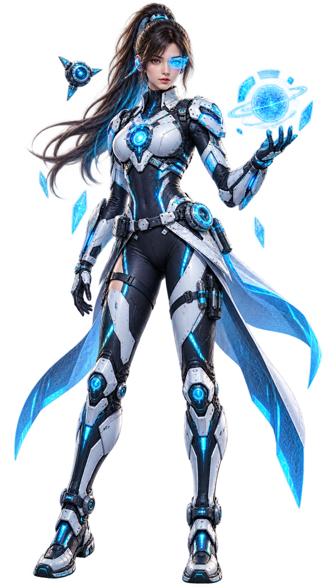

WORLD MAP
SENTINEL
LVL 1
CHAPTER 01 // PATTERN OBSERVATORY
TACTICAL MISSION MAP
The Observatory has detected unstable learning patterns. Restore the signal by completing the Guardian trials.
❖
0 / 10 COMPLETED
✦
0 XP
⬡
0 CR

● TRANSMISSION
SECTOR 01: PATTERN OBSERVATORY PROLOGUE
SKIP
➔
NOVA